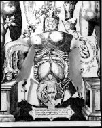

Johannes Remmelinus, Pinax microcosmographicus [...]. Ontleding des menschelyke lichaems, waer in alle de deelen des selve, met oplichtende figuren naukeurig en konstelyk vertoondt worden [...]. Uit het Latyn in de Nederlandtse tale overgeset [...] door Justus Danckers. De tweede druk, merckelyk verbeeterdt en van ontallyke fauten gesuyverdt. Amsterdam, voor Justus Danckersz., konst, kaert en boeck verkooper in de Kalver-straet, in de Danckers, 1667. -- (Plano 38 E 2)
De Duitse arts Johann Rümelin (in het Latijn vertaald als Johannes Remmelinus, 1583-1632) liet door Lukas Kilian drie anatomische platen graveren: de eerste met een man en vrouw in een klassieke houding, elk op een voetstuk; de tweede en derde van een man en vrouw afzonderlijk. De platen vertonen nogal wat bijzonderheden. Allereerst het feit dat elke plaat voorzien is van een aantal ‘lagen’, soms wel vijfentwintig, die bestaan uit anatomische details, die op de juiste plaats en in de juiste volgorde boven elkaar aan één kant vast zijn geplakt en opgelicht kunnen worden. Dit maakt het mogelijk elk onderdeel van de menselijke anatomie in de juiste plaats en verhouding ten opzichte van de andere delen te zien. Remmelinus’ platen, waarvan de eerste, ongeautoriseerde uitgave in 1613 verscheen, vergezeld van een tekstboekje gedateerd 1615, waren de eerste waarop dit procédé op uitgebreide schaal werd toegepast en ze kenden veel succes. De hier getoonde Nederlandse vertaling kwam zelfs in Japan terecht en werd, op haar beurt in het Japans vertaald, daar uitgegeven, al had de bewerker Sanshin Hara VI lang niet alles begrepen.
Het andere aspect is de sterk moraliserende strekking van de platen. Rond de figuren zijn talrijke symbolische afbeeldingen aangebracht, waarmee Remmelinus een christelijk geïnspireerde bedoeling had: de zondeval is de oorzaak van de menselijke breekbaarheid en slechts Christus kan ons na de dood opwekken. Artsen kunnen het leven niet meer dan enkele dagen rekken, want het uur van onze dood is immers voorbestemd. Door deze, meestal aan de bijbel ontleende, tendens werden de platen bijzonder geschikt geacht om opgehangen te worden in het Leidse Theatrum anatomicum, waarvan ook de verdere inrichting niets naliet de mens te herinneren aan zijn vergankelijkheid en de ijdelheid van alle dingen.
| vorige pagina | top pagina |